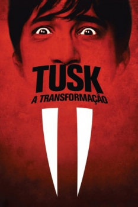

Tusk: A Transformação (2014)


Let me tell you a story...

Avaliação (TMDb):


5.4/10 (1.1K votos)
Avaliação (Usuário):
Outro Título:Tusk
País:United States, 102 minutos
Idiomas falados:Inglês, Espanhol, Português
Gênero(s):Comédia, Terror
Diretor(s):Kevin Smith
Codec:MPEG-2 (DVD)
Número: 5296
Sinopse:
Um americano escritor de podcasts impetuoso vai corajosamente à selva canadense para entrevistar um idoso com um passado incrível e descobre que o segredo sombrio deste homem envolve uma morsa.
Elenco:
Justin Long, Jennifer Schwalbach Smith, Ralph Garman, Haley Joel Osment, Michael Parks
Tipo de mídia: DVD R/RW,
Legendas: Inglês, Espanhol, Português, Sem Legendas
Alugado: Não
Tela: Anamorphic Widescreen